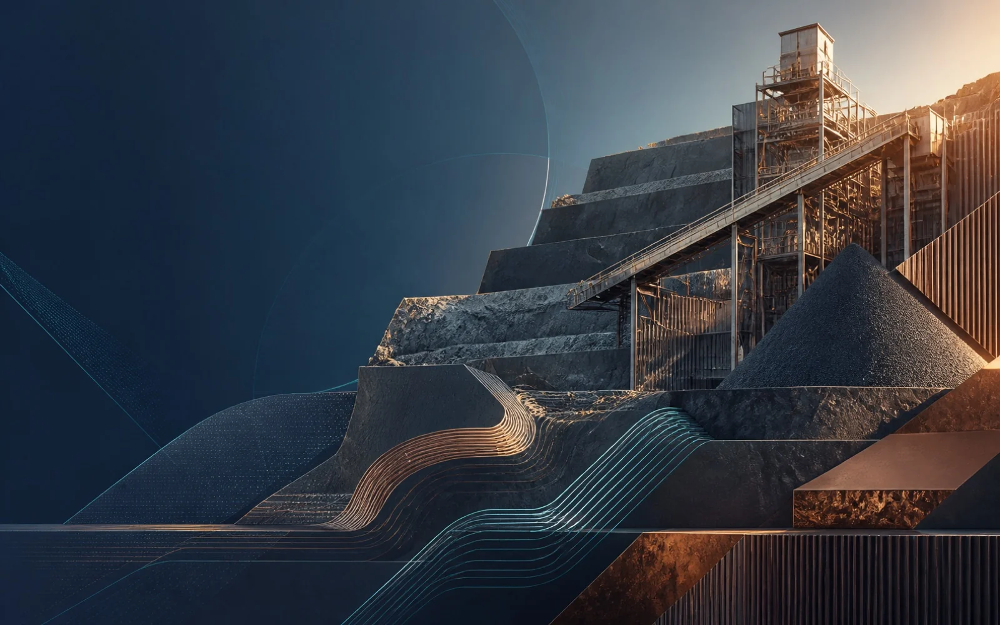

01
Power & Energy
Grid materials, cable accessories, project-power equipment and selected electrical products.
View industry →Industries
The actual RFQ, specification, quantity and delivery requirement determine whether China sourcing is practical.
CORE INDUSTRIES
Each industry page focuses on the technical information and sourcing risks that matter in that sector.
01
Grid materials, cable accessories, project-power equipment and selected electrical products.
View industry →02
Valves, pipes, fittings, meters, pumps and water-project equipment.
View industry →
03
Wear parts, screening products, fasteners and maintenance requirements.
View industry →
04
Steel, pipework, fasteners, fabricated items and project material packages.
View industry →CROSS-CATEGORY PROJECT PROCUREMENT
HONVAX can review multi-category project procurement packages against the complete BOQ, technical requirements and delivery plan.
Send the available information for an initial review of the China sourcing opportunity.